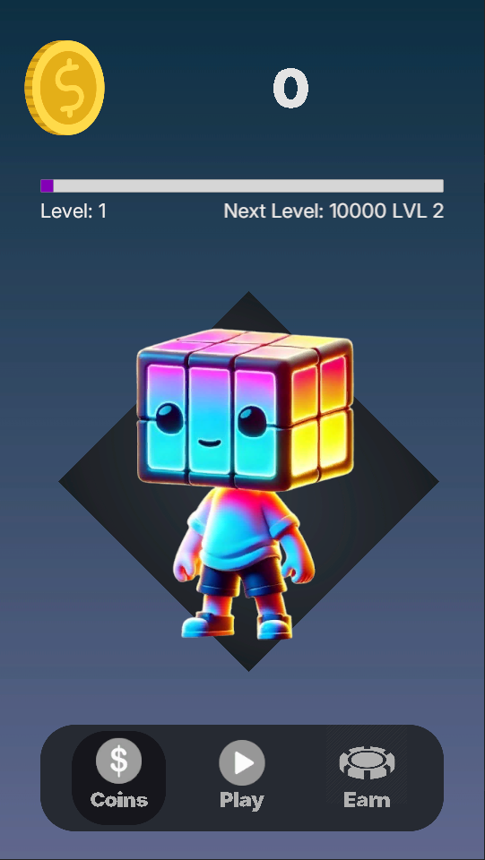
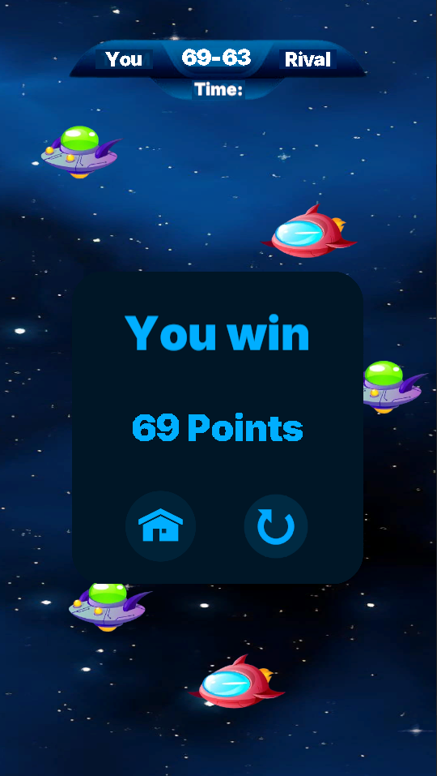
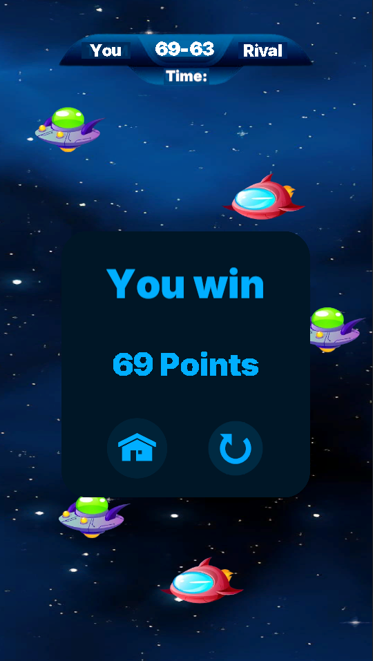
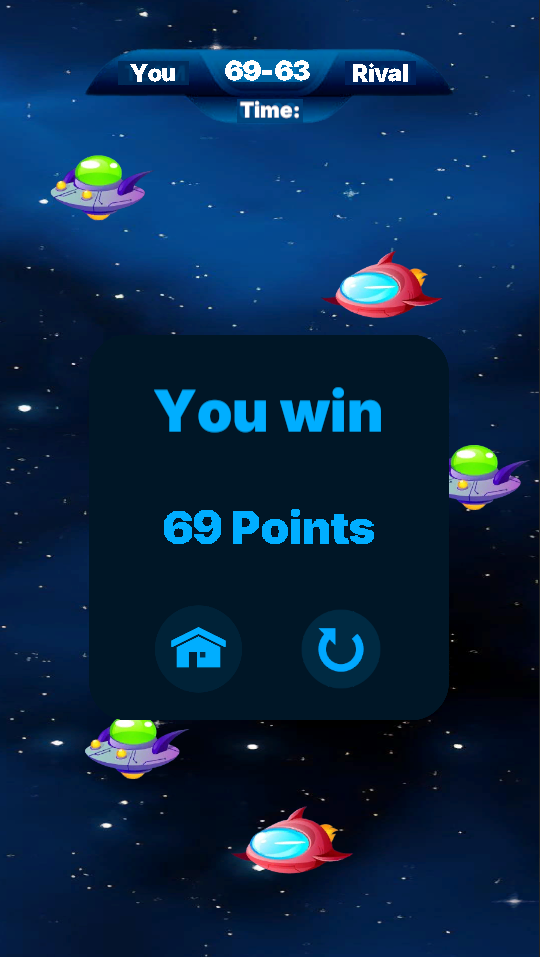

Screenshots

 

Unity | Mobile | Game Development
This is a mobile tap game where coins (ships) fall from the top of the screen. The player clicks coins to collect points, avoids bad coins, and races against a 60-second timer. The game increases difficulty over time and features fake multiplayer.

Working on this project helped me improve my skills in balancing gameplay difficulty, optimizing performance for mobile devices, and designing minimal but effective game UIs.